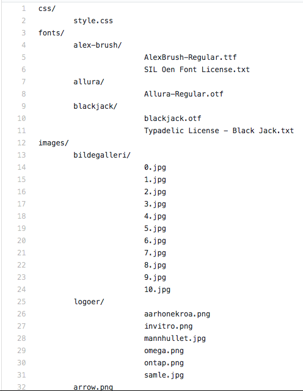

P4 Project Testing
Peder, Filip, Marcus og Sander
IT2805 November 2017
Administrative detaljer
Klientnavn: Gløshaugen bryggeforum
Nettsidenavn: Gløshaugen bryggeforum
Kontaktperson: Tord Standnes, leder
Link til nettsiden: Nettside
Testing Document
Her er spørsmålene vi brukte i skjemaet.- Når er du født?
- Hvilket operativsystem brker du?
- Bruker du tablet?
- Hvilken nettleser bruker?
- Ut i fra informasjonen på siden, hva tror du formålet med nettsiden er?
- Brukte noen eller alle av sidene lang tid på å laste? (Svar gjerne med hvilke sider)
- Slet du med å finne frem på siden? (1-5)
- Hvordan synes du bildegalleriet fungerte?
- Trykket du på noen av bryggelaugene for mer informasjon? Virket det?
- Hvor vanskelig var det å lese innholdet på siden?
- Nevn favoritt tingen din med siden?
- Hva likte du minst?
- Virker dette som en seriøs nettside?
- Hvor godt likte du layouten til siden?
-
-
For mobil/tablet brukere:
- Hvor lett var det å lese teksten på siden?
- Lastet siden korrekt? (Så det rart ut?)
- Prøvde du å trykke på bildene i bildegalleriet eller på bryggelaug siden? Funket dette?
Tester Audience
Det var et samlet arbeid å skaffe testere. Vi sendte spørreskjemaet til venner og bekjente på studie og fra hjembyen. Også skrev vi en facebook post på Gløshaugen Bryggeforum sin lukkete facebookside med hele 120 medlemmer Slik fikk vi tak i klientene og målgruppen til å ta spørreskjemaet.
Av svarene fikk vi folk fra alle aldere. 72% av de var født mellom 1990-1998, vi regner med at disse er studenter. 14% var yngre som er videregående elever, og 14% var eldre som er foreldere
Testing Platforms
Feedback Summary
Design
Hvordan synes du bildegalleriet fungerte (23 svar)
- Kritikk og forslag:
- Deformerte knapper på slideshowet (5)
- Ønsker piltast funksjon på slideshowet(2)
- Vil ha deskripsjon til bildene i slideshowet (1)
- Små bilder (2)
- For markant svart linje (på bilderammene) (1)
- Mappesortering for bildene (1)
- Positive tilbakemeldinger:
- Fungerte bra/fint/svært pent/oversiktilig/kult (6)
- Fungerte greit/OK: (5)
Navigation
Content
Nevn favorittingen din med siden (24 svar)
- Ølglasset på toppen (6)
- Guiden (5)
- Utseende / design (4)
- Bryggelaugene (4)
- Beregninger (3)
- Bildegalleriet (3)
- Logoen (2)
- Live-counteren over liter brygget (1)
- Meny (1)
- Bli medlem (1)
Hva likte du minst? (24 svar)
- Bildegalleri (5)
- Beregninger, for enkle formler (3)
- Medlemstallplassering (2)
- Bakgrunnen / layout (2)
- Skrivefeil, dårlige formuleringer (2)
- Brukt bilde av meg (1)
- Ikke beskrivelse på bildene (1)
- Bryggelaugene (1))
- Står ikke hva du får ut av å være medlem (1)
- Hjem-siden (1)
Ut i fra informasjonen på siden, hva tror du formålet med nettsiden er? (26 svar)
- Bryggeforum (16)
- Brygging (10)
- Hvor mange som bruker windows f. eks (1)
Usability
Endringer
Vi hadde først tenkt til å lage syv sider, men endret dette til at "Om oss" siden ble integrert i forsiden,
etter forespørsel fra klienten. Vi har også endret designet betydelig fra hva vi først planla.
Vi har endret menyen til å være integrert i rammen på siden og vi la til en animasjon i denne menyen.
I tillegg la vi til hover-animasjoner på linkene i menyen, da dette bidrar til å rette fokuset til
brukeren mot elementet han beveger seg over, og tilbyr dermed et mer intuivit navigasjonsdesign.
Planen var også å ha logoen til GB i menyen, men etterhvert som vi prøvde forskjellige design, fant vi
ut at det var best å la være å ha den i menyen og heller implementere den i innholdsdelen av siden.
Vi har også lagt til en loader som vises inntill nettsiden lastes inn, slik at bruker ikke opplever at
nettside elementer hopper rundt, mens han venter på at siden skal lastes. Dette fører til en bedre
brukeropplevelse og et mer sømløst produkt.
Vi bestemte oss også for å seksjonere innholdet for at det skulle bli mer oversiktlig.
I tillegg utviddet vi innholdselementet slik at den er bredere
og vi får dermed bedre plassutnyttelse på siden. Vi la også til flere JavaScripts enn vi hadde planlagt,
da vi så behovet for dette. Dette er for eksempel "Footer.js" og "parallexEffect.js". "Footer.js" gjør innholdet
til footeren konsistent på alle sidene, på samme måte som "navbar.js". "ParallexEffect.js" gjør at
bakgrunnen beveger seg annerledes (annen hastighet) enn andre elementer på siden, samtiig som den
fjerner loading-animasjonen når siden lastes inn.
Vi endret også "posisjon" av slideshowet fra "på" siden
til "flytende" på siden. Slideshowet kommer nå opp hvis en trykker på et bilde i bildegalleriet.
Dette designet laget vi da det tilbyr minst like mye funksjonalitet, men samtidig har bedre
plassutnyttelse og av gruppens mening bedre utforming, da man kan klikke på hvert individuelle bilde og
ikke trenger å forholde seg til en fast plassert slideshow funksjon. Vi bestemte oss også for at bildene
i slideshowet skulle holde sitt originale størrelsesforhold, da det forrige designet deformerte bildene.
Vi la også til en egen mobilmeny for bedre bruketopplevelse ved bruk av enheter med mindre skjermer
(bredde<1200px). Puttet også inn en funksjon i "navbar.js" for å fjerne teksten "Meny" fra mobilmenyen
når den blir klikket på. Vi bestemte oss også for å fjerne visse elementer fra nettsiden når skjermen ble liten,
som for eksempel logoer og øl-måler, da disse tok opp unødvendig plass på en liten skjerm.
Dette fører til bedre oversikt og svært mulig raskere innlasting og mindre dataforbruk på mobilt nettverk.
Vi endret måten informasjonen om bryggelaugene blir vist, fra at informasjonen vises "inne i" siden,
til at den blir en "pop-up".
Oppdatert mappestruktur
Alle filnavn nedenfor er lagt i en mappe kalt "nettside".
